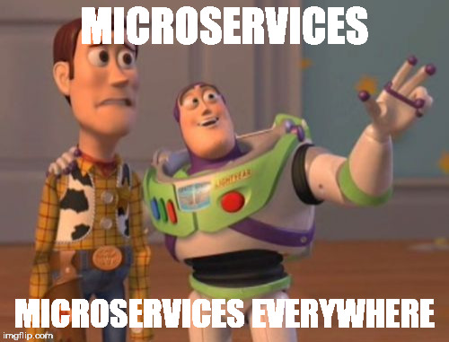

Architectures microservices TP1
Efrei - octobre 2016
Clément Stoquart
Qui suis-je ?
promo 2013
Ingénieur Java
6 séances
- TP : Concepts de base, outils, un premier microservice
- TP : Des microservices + registry
- CM : les architectures microservice en détail
- CM : (idem)
- TP : load balancing + circuit breaker
- TP : Déploiement cloud, Docker,...
TP 1
- Concepts
- Ecosystème logiciel
- Outils
- TP
Google, Amazon, Netflix,...
Définition
In short, the microservice architectural style is an approach to developing a single application as a suite of small services, each running in its own process and communicating with lightweight mechanisms, often an HTTP resource API. (...)James Lewis et Martin Fowler
1. Concepts
Concepts
- 1 microservice = 1 domaine fonctionnel
- Processus indépendant
- Couplage faible : REST, messaging,...
- Déploiements simples et rapides : automatisés, continus
2. Ecosystème logiciel
Spring Boot
Microservice-ready framework
Spring Boot
- Efficace : configuration automatique via annotations
- Déploiement simple : Jar avec serveur d'app embarqué et configuré)
- Cloud-ready : Amazon Web Services, Pivotal,...
- Pas de configuration XML !
- Documentation de qualité
@SpringBootApplication
public class Application {
public static void main(String[] args) {
SpringApplication.run(Application.class, args);
}
}

- Eureka : service discovery
- Hystrix : circuit breaker
- Ribbon : load balancing
- Feign, Zuul,...
Spring Cloud Netflix

Configuration par défaut = prod Netflix
Open source et gratuit
3. Outils
IntelliJ IDEA

Gradle
- Gestion des dépendances
- Build